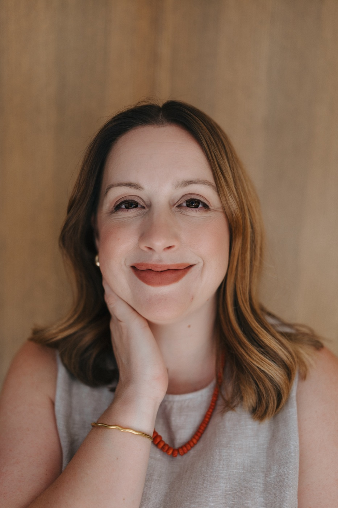

Better questions create better leaders.
The right question can uncover perspective that advice never could.
Curious enough to ask the question others missed. Direct enough to say what needs to be said. Grounded enough to know when to challenge—and when to listen.
I’m Richelle Safe, founder of Coral Coaching. For more than 15 years, I partnered with leaders inside Meta, Amazon, and Netflix through rapid growth, organizational change, promotions, difficult decisions, and the moments when leadership was truly tested.
I saw firsthand that the strongest leaders don’t always have immediate answers. They know how to slow down, ask better questions, listen for what isn’t being said, and make thoughtful decisions when certainty isn’t available.
Today, I create that kind of space for individuals and groups navigating pivotal leadership moments. My role isn’t to hand you a formula. It’s to help you see the situation more clearly, strengthen your own judgment, and move forward in a way that feels honest and intentional.
Book a discovery call
These principles shape every coaching conversation at Coral.
The right question can uncover perspective that advice never could.
Leadership asks us to make sound decisions long before every answer arrives.
A candid, confidential thinking partnership can change what becomes possible.
A perspective shaped by leadership under pressure, not just leadership theory.
I’ve seen how promotion and performance decisions are made, how change affects people differently, and how easily an avoided conversation becomes a team pattern.
That perspective allows us to spend less time explaining organizational complexity and more time examining the decision, relationship, or leadership moment in front of you.
My expertise should be evident in the questions I ask, the patterns I notice, and the quality of the conversation—not in unnecessary jargon or performative authority.
We begin with discovery. You’ll feel understood before you feel coached.
When something needs to be named, I’ll name it—with empathy and without unnecessary sharp edges.
Our conversations stay connected to real decisions, relationships, and the realities of your work.
You don’t need a perfectly formed goal. Bring the situation as it is, and we’ll explore whether Coral Coaching is the right kind of support.
No pressure and no performance. Just an honest conversation about what you’re navigating and what you want to change.
Book a discovery call